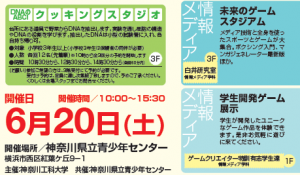

6/20(土)公開デモ「科学のひろば2015」のおしらせ
今年も、横浜ベイエリアを臨む「神奈川県立青少年センター」で神奈川工科大学主催の一般向け科学イベント「科学のひろば」を開催します。
白井研究室開設の2010年以来、毎年参加しているイベントです！
今年の白井研究室ゾーンのテーマは「未来のゲームスタジアム」です。
メディア技術と全身を使ったスポーツとゲームが大集合。
科学コミュニケーターの外口さんによるワークショップも交えて盛大に開催します。
普段なかなかお会いできない方、企業の方、OBの方、ファミリーさんなど、どなたでも自由にご参加いただける無料イベントです。会場にてお会いできることを楽しみにしております！
【展示予定リスト】
・超人ボクシングトレーナー（新作）
超人スポーツを知っているかい!? このプロジェクトは現存するスポーツの中でも特にハードなスポーツであるボクシングを対象に、ボクシングにおいて重要である「拳の速度」や「ストローク」、「キレ」といった要素を計測するゲームだ！実際に人を殴ったりしないでも、キミの才能を測定するぜ！
・マンガジェネレーター2015
東京・渋谷の先端技術館「TEPIA」で大人気、「嵐にしやがれ」でも紹介されました。今回の展示では新搭載のNUI（非装着・自然なユーザ入力）アルゴリズムをテスト中。完全無人運用が可能ですが、担当者の歌って踊れるロリ服プログラマの安藤さんファンはぜひ一緒に体験しましょう。
・多重化「スプラトゥーン KAIT横浜カップ」開催！
白井研究室が2010年より研究を続けている多重化技術の最新作「ExPixel FPGA」を使って、大人気の任天堂WiiU「スプラトゥーン(Splatoon)」の体験＆対戦イベントを行います。腕に覚えのある方だけでなく、初心者さん、WiiUもってないけどやってみたい方も是非。
※当日、会場のネットワークの環境によってはただの試遊台になる可能性もあります！本格的なイベントに使いたい人はぜひ会場でご相談ください。
本デモンストレーションはJSPS科研費25330440の助成を受けたものです。
参考までに2010年の多重化格闘ゲーム体験の様子を動画で紹介…
・AugmentedTV公開デモ＆実験
・ワークショップ「DNAのABC!クッキングスタジオ」
ストリート科学コミュニケーターのロケットコミュニケーションズ・外口さんによるワークショップです。
台所用品を使って、野菜からDNAを抽出する実験を行い、細胞の構造やDNAの役割を学ぼうという内容です。抽出したDNAは小型の試験管に入れ、持ち帰りができます。
●対象 小学校3年生以上（小学校3年生は保護者の同伴が必要）
●人数 各回12名（先着順）
●時間 10時30分から、12時30分から、14時30分から（各回60分内）
（お願い）参加ご希望の方は、３階・白井研究室ゾーンに設定する受付にて予約が必要です。受付け予約は、定員に達し次第終了致しますので、予めご了承ください。くわしくは会場スタッフまでお問合せください。
PDFはこちら
https://www.kait.jp/data/pdf/20150525_01.pdf
■ 実験参加についての同意書「未来のゲームスタジアム」（2015/6/20）
このたびは神奈川工科大学「科学のひろば」および、情報メディア学科・白井研究室「未来のゲームスタジアム」にご来場いただきありがとうございます。
本研究室は「エンタテイメントシステム」について科学的研究を行っており、研究の一環として、体験者（未成年者含む）のデータについて、対話的・物理的取得し、今後の研究に役立てさせていただいております。
【研究の目的】
自然界に存在する現象に加え、多種多様にわたる人間の自然なふるまいをモーションビッグデータとして扱い、取得・保存可能にし、大量のデータから意味を抽出し、人工知能やサービスロボット、通信環境に組み込むことで、人間の生活の質向上に寄与することを目的としています。
研究の必要性として、従来は実験室内で実験の目的を知りえる学生、一般から募った協力者を利用しますが、実際の生活環境や、楽しみのある空間における自然なふるまいから取得する必要があります。
【実験参加者の不利益および危険性とその対処法】
実験を通して、故意の怪我や事故などがないよう、実験参加者は個人の責任において十分注意いたします。万が一事故が起きた場合には、同行者、オペレータは迅速に人道的処置を行いますが責任は負いません。
また実験参加者は以下の不利益の可能性があり、想定された対策として以下が施されています。
(1) 個人の趣味嗜好の分析
身体表現やシナリオなどの選択傾向を分析しますが，集合的な情報であり，個人は特定できないように画像処理しています。
(2) 身長や体格などの特徴
個人と紐づけません．画像公開が必要な場合は本人に許諾を得ます．
(3) 会話と表情の記録と利用
ビデオ等に記録された会話と表情について分析します．公開が必要な場合は本人に許諾を得ます．主に感情に関わる会話を利用し，経済活動などは抽出しません．
(4) 同空間に存在する他の人物との関係の分析
実験参加者と不特定多数の周囲の人物との関係を分析します．結果は推定であり，誤りも含みます．メタデータであり，個人を特定できるデータとして原則公開しません．
(5) 研究工程を通した研究協力者への不利益回避
以上(1)～(4)について，取得された知見を確認するため，実験環境を使いフィードバック実験を行います．その工程において，中間データの漏えい，不適切な処理による研究協力者への不利益が発生しないよう必要な策を講じます．
個人情報保護への配慮：
実験によって得られたデータは、連結不可能匿名化を行い、研究対象者の人権に配慮した取り扱いをします。
研究結果を学会等において公表する場合は、対象者のプライバシーを護り、本人が特定できないよう十分配慮します。
研究に参加しない自由の確保：研究対象者は、この研究（実験）に参加しない自由を持ちます。また、実験に参加していても、その同意を撤回することができます。
【研究成果の公表方法】
個人が特定できない集合的なデータ，および特徴的なデータに対する画像（個人が特定できない加工処理を施したもの）を公開する可能性があります。
【関連情報】
本研究における倫理基準は神奈川工科大学「ヒトを対象とした研究に関する倫理審査委員会において審査された「QoL向上を目的としたモーションビッグデータの知能化」に基づき実施しております。
また本研究の一部は JSPS科研費25330440 「多重化隠蔽映像技術による新たな情報共有空間の創出のための映像制作手法の確立」の助成を受け、実施いたしております。
詳細についてはこちらに情報を掲示します
https://www.shirai.la/blog/2015/06/kagakunohiroba2015/